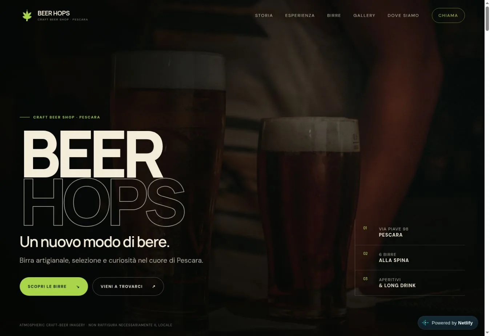
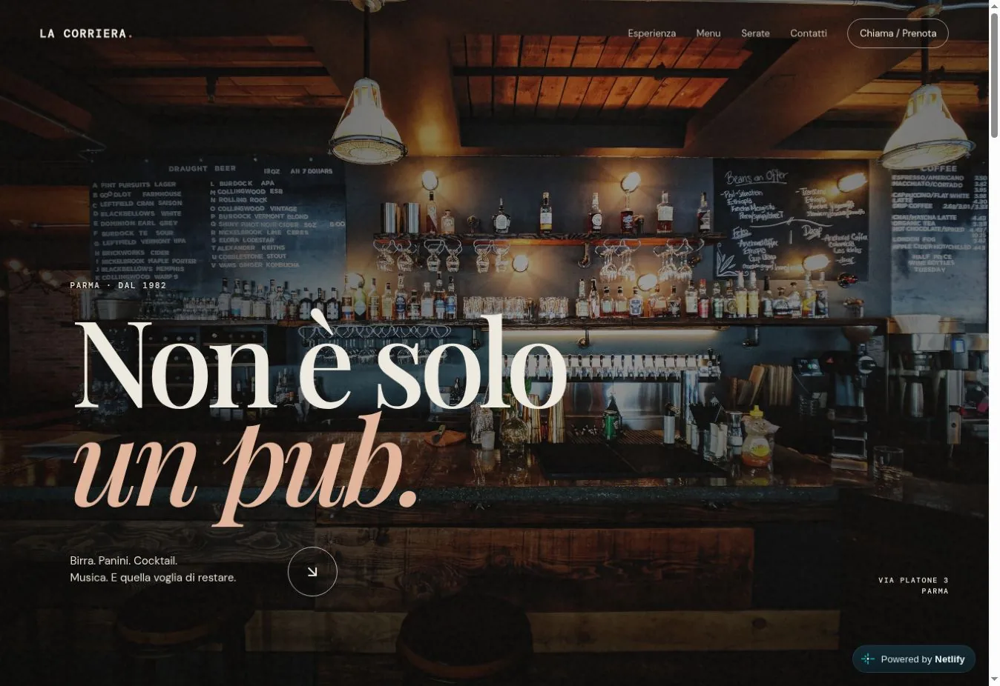
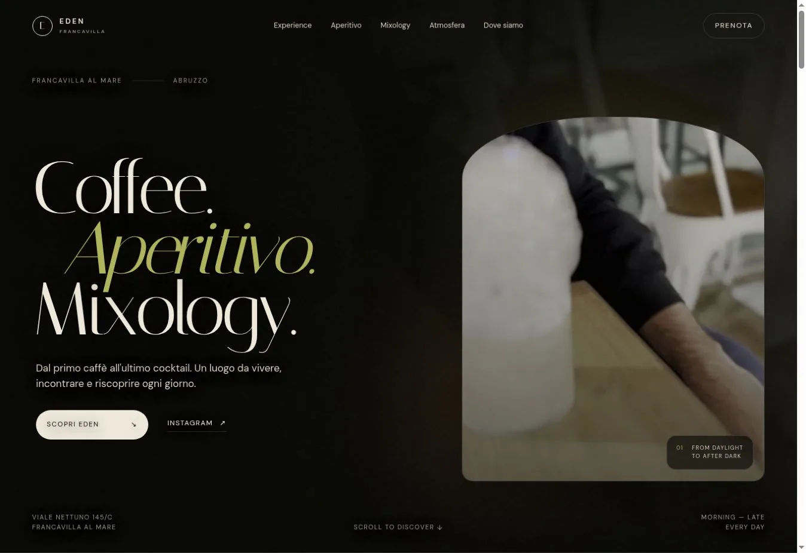
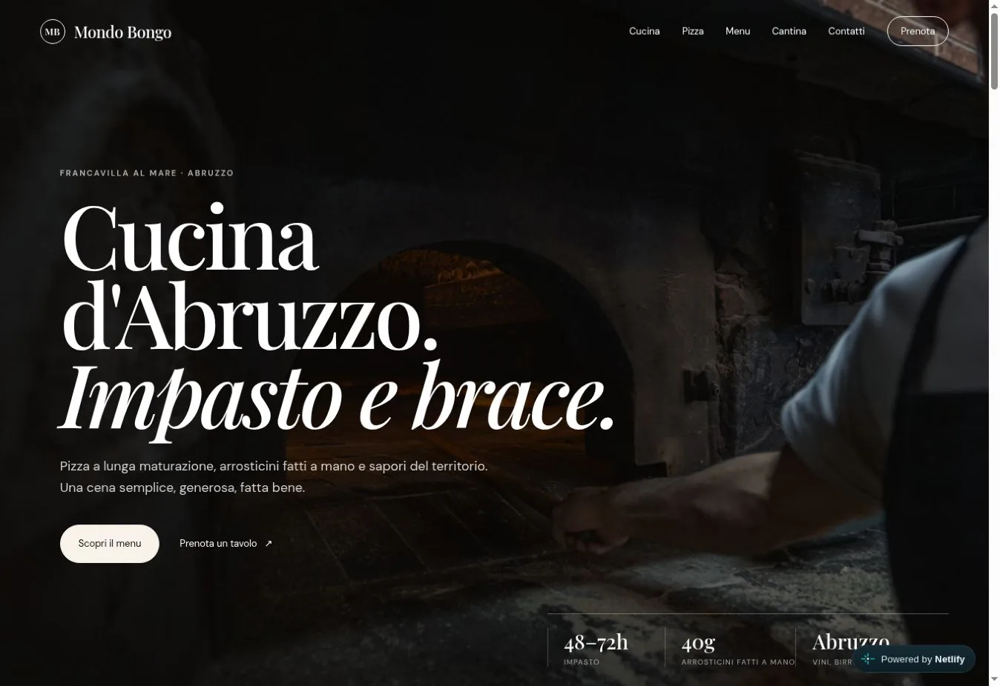

Beer Hops
Il nostro concept web per Beer Hops. Esplora la demo e scopri la direzione visiva del progetto.
Progetto dimostrativo — non commissionato.
Visualizza demoSiti web per ristoranti, bar e attività locali.
Progettati da due fratelli, intorno alla tua storia.
Siamo Manuel e Nicolas Di Paolo, due fratelli che creano siti web per ristoranti, bar e attività locali.
Ci piace partire dalle cose vere: le persone, i luoghi, ciò che rende un’attività riconoscibile. E trasformarle in un sito chiaro, curato e semplice da usare.
Quattro identità. Quattro modi di raccontarle.
Aprile e prova l’esperienza in prima persona.

Il nostro concept web per Beer Hops. Esplora la demo e scopri la direzione visiva del progetto.
Progetto dimostrativo — non commissionato.
Visualizza demo
Un percorso dedicato all’esperienza del pub, con categorie del menu e collegamenti diretti alle informazioni utili.
Progetto dimostrativo — non commissionato.
Visualizza demo
Un concept dalla direzione scura ed editoriale, che accompagna il visitatore dal caffè all’aperitivo e alla mixology.
Progetto dimostrativo — non commissionato.
Visualizza demo
Un concept centrato sul menu, con pizza, arrosticini e cucina abruzzese al centro del racconto.
Progetto dimostrativo — non commissionato.
Visualizza demoCome potrebbe essere il sito della tua attività?
Partiamo dalla tua ideaAnteprime delle demo: apri i siti per esplorarli e interagire con i contenuti. Le demo non sono commissionate e non implicano collaborazioni o approvazioni delle attività.
Un sito pensato per la tua attività.
E per le persone che la cercano.
Struttura, colori e contenuti costruiti intorno alla tua identità. Per raccontare chi sei, cosa fai e perché venirti a trovare.
Menu leggibili, navigazione intuitiva e contatti a portata di pollice. Un’esperienza curata anche sugli schermi più piccoli.
Ti accompagniamo dal primo confronto alla pubblicazione, con i collegamenti utili per chiamarti, scriverti e trovarti.
Ci racconti la tua attività, le tue esigenze e cosa vorresti comunicare.
Prepariamo una proposta e la rivediamo insieme, dai contenuti ai dettagli.
Rivediamo testi, immagini e navigazione con te, raccogliendo le modifiche prima della pubblicazione.
Verifichiamo il sito su desktop e smartphone, poi lo portiamo online.
Qualche punto di partenza, prima di parlare del tuo progetto.
Instagram racconta il quotidiano. Un sito raccoglie in un unico posto le informazioni che le persone cercano: cosa offri, il menu, dove sei e come contattarti. I due strumenti possono lavorare insieme.
Dipende da pagine, contenuti e funzionalità. Prima definiamo insieme ciò che ti serve, poi ti presentiamo una proposta con attività e costi: concordiamo il perimetro del lavoro prima di iniziare.
I tempi dipendono dalla complessità e dalla disponibilità di testi, foto e altre informazioni. Li concordiamo nella proposta, prima di iniziare.
Per il primo confronto bastano il nome della tua attività e la tua idea. Per costruire il sito raccoglieremo le informazioni corrette, i contatti, il logo e le immagini che hai il diritto di utilizzare.
No. I progetti presentati sono demo non commissionate, realizzate per mostrare il nostro lavoro. Non rappresentano collaborazioni commerciali né approvazioni delle attività.
PARTIAMO DALLA TUA IDEA
Scegli la tua attività e da dove vuoi partire. Prepariamo un messaggio che puoi modificare su WhatsApp.
Con chi vuoi parlarne?
Le scelte restano in questa pagina fino al clic. WhatsApp si aprirà con una bozza: sarai tu a inviarla.
Hai un’attività e stai pensando al tuo sito?
Scrivi a Manuel o Nicolas: raccontaci il nome della tua attività
e cosa vorresti migliorare online.